Themenwelt Wald
Morgenkreis · Kindergarten
Eine Geschichte, ein Spiel und vertraute Rituale öffnen im Sitzkreis die Themenwelt.
Morgenkreis, Bewegungseinheiten und Vorschule – verbunden durch eine gemeinsame Themenwelt.
bewegt & bunt entwickelt klar aufgebaute Handouts für den Kita-Alltag, für die Vorschule mit passendem Kinderblatt. Sie unterstützen pädagogische Fachkräfte bei der Vorbereitung und geben Kindern Raum zum Spielen, Lernen und Gestalten.
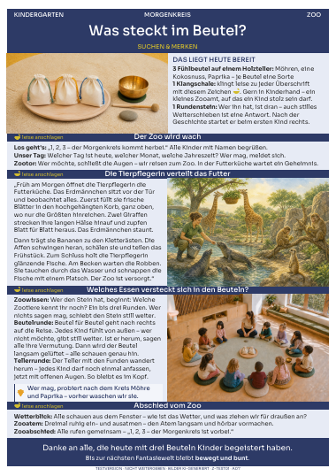
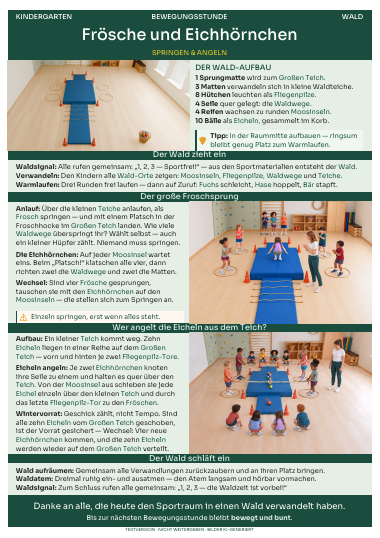
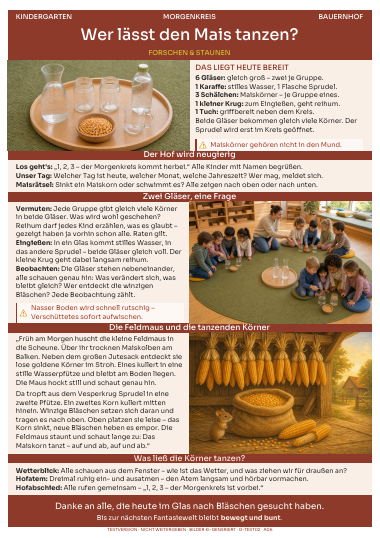
Das Konzept jeder Themenwelt umfasst vier Morgenkreise, vier Sporteinheiten und vier Vorschulstunden mit passenden Kinderblättern. Ob Wald, Bauernhof oder Zoo: Geschichten, Bewegung und Vorschulideen greifen das gemeinsame Thema auf. Sie wählen, was zu Ihrer Gruppe und zu Ihrem Monat passt.
Themenwelt Wald
Eine Geschichte, ein Spiel und vertraute Rituale öffnen im Sitzkreis die Themenwelt.
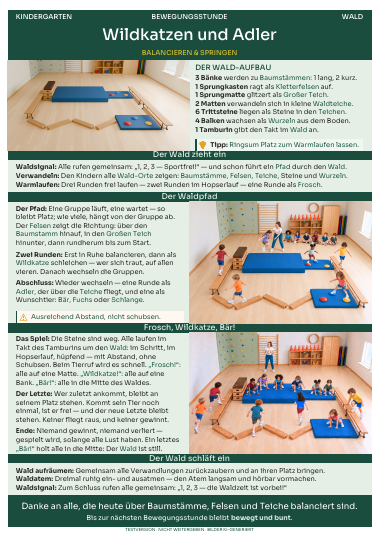
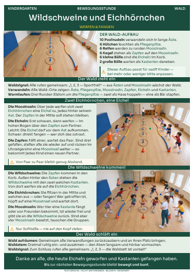
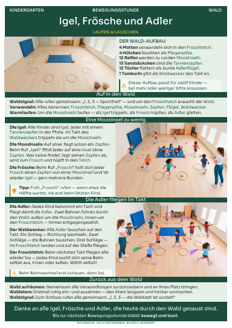
Themenwelt Wald
Aus vertrautem Material wird eine Themenstunde im Bewegungsraum – mit einem klaren Ablauf und Zeit zum Ausklingen.
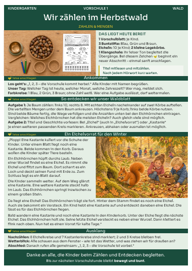
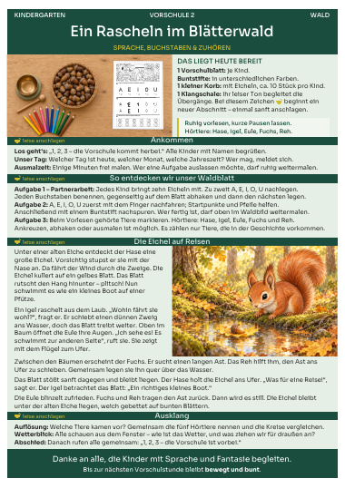
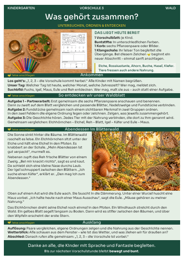
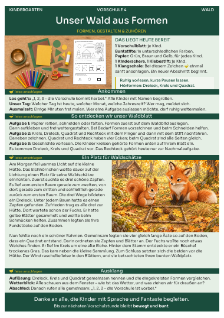
Themenwelt Wald
Zählen, zuhören, ordnen, gestalten: Jede Vorschuleinheit verbindet ein Handout mit einem passenden Kinderblatt.
Einblicke in Morgenkreis, Bewegungseinheiten und Vorschule. Bilder KI-generiert.
Morgenkreis · Kindergarten
Was raschelt im Wald, wer lebt auf dem Bauernhof? Die Kinder hören zu, bringen eigene Ideen ein und entdecken die Themenwelt mit allen Sinnen. Kleine Spielimpulse lassen aus einer Geschichte ein gemeinsames Erlebnis werden – mit Zeit für Fragen und für jedes Kind.
Bewegungseinheiten · Kindergarten
Über Waldteiche springen oder Vorräte sammeln: Die Themenwelt gibt der Bewegung eine Geschichte. Die Kinder erproben ihr Gleichgewicht, ihre Geschicklichkeit und das Miteinander. Sie passen die Spielideen an Raum, Material und Gruppe an – damit jedes Kind auf seine Weise mitmachen kann.
Vorschule · für die Großen im Kindergarten
Jede Vorschulstunde verbindet ein Handout für pädagogische Fachkräfte mit einem passenden Kinderblatt.
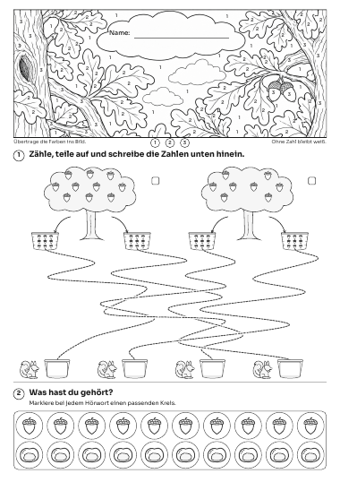
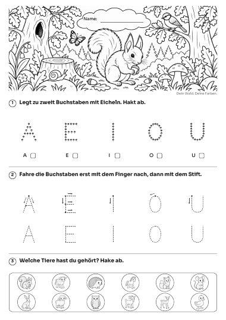
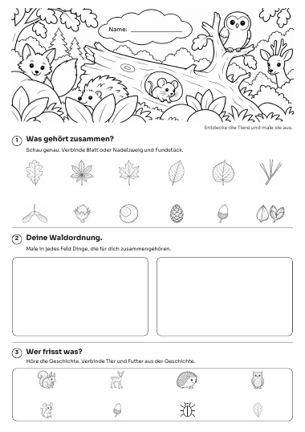
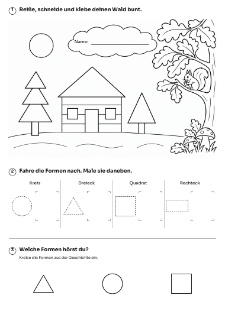
Die Kinder malen nach Zahlen und hören der Geschichte zu. Für „Eichel“ und „Kastanie“ markieren sie passende Kreise.
Aus vertrauten Dingen wird eine Welt: Im Sitzkreis öffnet sich das Waldtor, im Bewegungsraum werden Matten zu Waldteichen, und in der Vorschule entsteht ein Wald aus Formen. Die gemeinsame Themenwelt verbindet Geschichten, Bewegung und Gestaltung.
Ein wiederkehrender Aufbau macht Material, Ablauf und Begleitung leicht auffindbar – im Morgenkreis, in der Bewegungseinheit und in der Vorschule. So können Sie sich auf Ihre Gruppe konzentrieren.
Kein Erfinden unter Zeitdruck: Das Blatt trägt den Ablauf – und lässt Raum für Ihre Gruppe. Sie entscheiden, was Ihre Kinder heute brauchen.
René Krakow ist Ergotherapeut und begleitet Kinder individuell in Krippe und Kindergarten. bewegt & bunt ist aus diesem Alltag entstanden – aus einer einfachen Frage: Wie können Morgenkreis, Bewegungseinheiten und Vorschule klar vorbereitet sein und trotzdem offen für jedes einzelne Kind bleiben? Die Antwort steht auf jedem Blatt: Sie kennen Ihre Kinder. bewegt & bunt liefert Struktur und roten Faden.
Mehr über René →„Ein Hütchen bleibt ein Hütchen – bis ein Kind darin einen Fliegenpilz sieht."
Die Morgenkreis-Handouts werden im begleiteten Praxistest eingesetzt und persönlich weitergegeben – zum Ausprobieren in Ihrer Gruppe, nicht zum Weitergeben. Wenn Sie eine Rückmeldung geben, einen Einblick erhalten oder mit Ihrer Einrichtung teilnehmen möchten, schreiben Sie mir gern – ich antworte zeitnah.